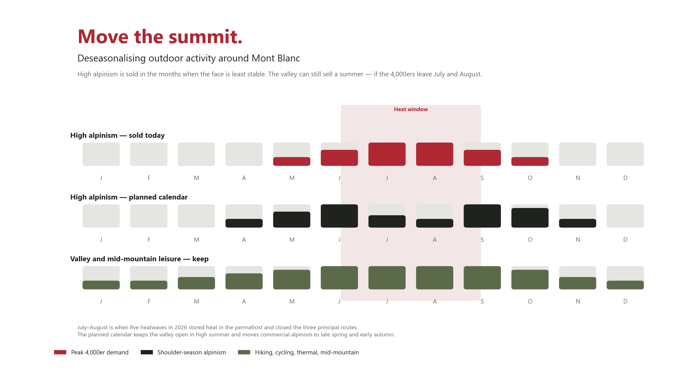

Insight · Territorial Risk
Mont Blanc can no longer be sold in August

The towns under Mont Blanc sell one thing the rest of the Alps cannot copy: the highest ground. This summer the ground refused. Five heatwaves stored heat in the permafrost. The ice that holds the faces together loosened. Rock fell. The three principal routes were unusable at the same time. That is not a mountain-sports incident. It is a regional economy discovering that its brand sits on a thawing wall.
What the face withdrew
The binder is permafrost. Ludovic Ravanel’s boreholes at the Aiguille du Midi show the rock at the heart of the massif has warmed by 1 to 1.5°C in a decade. The ice in the cracks no longer holds. Between 2007 and 2024 the massif recorded about 2,500 rockfalls of more than 100 cubic metres. This summer the Chamonix mayor, François-Xavier Laffin, put the worst days at about ten of those falls a day. On 12 August some 15,000 cubic metres came off the north face of the Aiguille du Midi — beside the cable that takes on the order of 500,000 visitors a year.
The Italian normal route was already unusable from 15 July. Alex Campedelli, of the Courmayeur guides, was blunt: the glacier was too crevassed to take clients. French companies suspended the summit. On 11 August Jean-Marc Peillex, mayor of Saint-Gervais, closed the Goûter and Tête Rousse refuges. He cannot close the mountain by decree — he would have to prove the risk had gone. So he closes the huts. Fourth time. His line: the mountain dictates the rules. On reopening, 26 August, he said the massif had stored unprecedented heat, and that the reasonable act is to climb when it is cooler.
The money sits in the valley
No official season-loss total has been published. The scale of what was interrupted has. The Chamonix valley is a €1.4 billion tourism economy and about 8,400 jobs. Summer is no longer the junior season: 4.5 million of 8.6 million nights. That summer spend has supported about 3,500 jobs. The Compagnie du Mont-Blanc turns over about €156 million and employs about 400 people in summer.
The product that stopped is narrower and more expensive. Five-day Mont Blanc programmes sell at €2,400 to €3,800 a head. The Goûter holds 120 beds, Tête Rousse 72: about 2,900 high-mountain nights removed in two August weeks. Courmayeur had already lost the Italian route for six weeks of high season. Companies can send a rope to Gran Paradiso or Monte Rosa. The independent guide whose client came for the roof of the Alps cannot. A town that sits under a single summit discovers it has no second product.
Move the summit
Peillex has already said the quiet part: climb when it is cooler. Write that into the calendar. High alpinism belongs in late spring and early autumn. July and August stay open — as hiking, cycling, thermal, via ferrata, the Midi as a viewpoint. Ninety percent of that cable’s traffic is already contemplative. The 4,000er is the part of the brochure the heat is deleting. Keeping it in August is not authenticity. It is a refusal to read the face.

A massif is not one town
Do not wait for the Goûter to be safe in August. It will not be, not as a planning assumption. Recover the economy by changing what the territory sells, and where. Les Contamines, Saint-Gervais, Courmayeur, La Thuile, the Val Ferret, Gran Paradiso, Monte Rosa are not overflow car parks. They are the alternative routes and the alternative towns. That means beds, guide desks, mid-station lifts and a professional network that can reroute a rope in a day. Treat Chamonix as the capital of a massif, not the only cash register. Laffin is right that the commune is not ordinary. He is wrong if regulating crowds is the whole strategy. The hazard is not only too many people. It is too many people on the same face, in the same fortnight, on a binder that is melting. Authenticity, for this brand, is to stop promising a July summit it can no longer deliver — and to start selling a region that still works.
The 2026 summer was the mountain editing the brochure. The next season is a planning choice: one peak in the hottest month, or a massif with a calendar that can still be kept.
Terranova Strategy
Strategic Territorial Recovery
Strategic Territorial Recovery sequences a mountain economy the way a closed route should be sequenced: what the valley can still sell this summer, which towns take the overflow, and which peaks become the shoulder-season product — so a thawing face is not mistaken for the end of the region.
Explore service